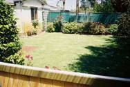

Tarpeena Tales 10
Yesterday, as I was strolling through the Pines,I thought how wrong the prophet was to promise all those martyrs 40 virgins, transient pleasure only and doubtful one at that, when Paradise was an early morning walk through the pines in Tarpeena. There could be nothing better than seeing the sun rising through the mist, hearing the magpies warbling overhead and kookaburras chortling at the idiot below and a half blind dog chasing after what it could only smell and not see. The kangaroos were equally happy as Trixie could not disturb their breakfast seeing as she didn't even know they were there and allowed me to get quite close before they skipped off into the bush. And a walk through the pines can go on forever whereas 40 virgins are a once only feast. Yes, he got it wrong alright. 
Some days have that magical quality and yesterday was one of those.
I have worked out that trudging up the hills of Canberra and skidding down them while good for the heart rate is not as good as the level walk through the local Pine forests when you are 61 and over. It's the same with bike riding. While I admire Lance Armstrong pedaling up the and down the Alps I bet when he's 61 he will be looking for the flat plains of Flanders or indeed the flat roads around Tarpeena. Preferably with the wind at your back on the way home. Now theres another reward that could be offered to an aged martyr. Although "may all your bike rides be downhill" doesn't have the same ring to it as 40 virgins, but I know what I would prefer!
The gardening was all caught up with too, that is the lawns were cut and the weeds sprayed.
Now they were showing on TV the different burial customs around the world and one mob bury their own in a coffin that looks like their trade or pastime. One bloke was interred in a boat and another in a shoe, I suppose all the women get buried in a cooking pot, non stick of course. I mused that my coffin would have to be Ford car as I always seem to be cleaning it but Nuran said it should be a beer bottle as I always seem to be emptying them! Good point. They find some strange things to make documentaries about on TV.
Another of them was how so much more is expected of each generation than the one before. This is true and is a pity. My Grandpa never had to worry about his prostrate as the fact you couldn't piddle as high as your son was always put down to old age not some organic thing that could be fixed. Now even old farts are supposed to be equal to middle aged ones. It's not fair.
You know getting older doesn't worry me as I've never relied on my looks so losing them is definitely not an issue and anyway the only way I feel older is that the prospect of 40 virgins seems less pleasurable than a flat walk through the pines.
There is this grey nomad army in australia that hook up their caravans and then tour the countryside only heading home for important birthdays or funerals, a pleasurable lifestyle if you enjoy that sort of thing but Nuran and I prefer the grey homing pigeon lifestyle. We up and away to anywhere but always come home in a couple of days. It's days like these that do that to us.
So up and away it is while the wind is kind and the bike is pumped up and raring to go. Well it's tyres are,
May the wind always be at your back.